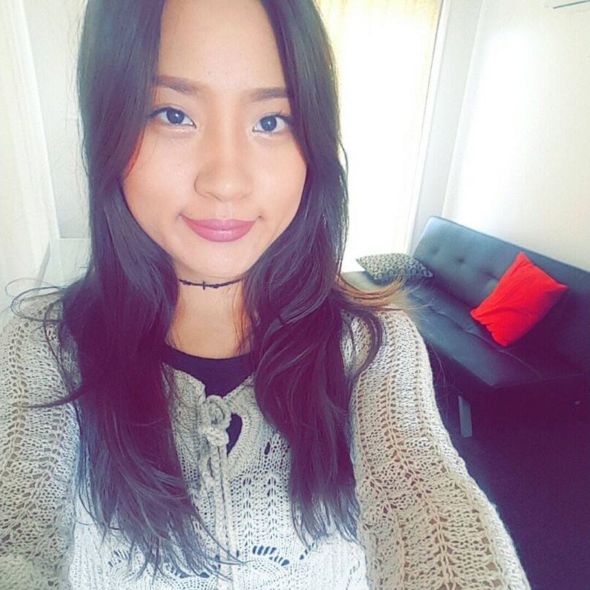

My name is Xiao Yu Lim (S3622764), and currently, I am studying a Bachelor of Information Technology in RMIT. This is my second-year first semester for this course. I did Bachelor of Computer Science since February 2017, and I changed to Bachelor of Information Technology since July 2018.I am an international student from Ipoh, Malaysia. As a Malaysian Chinese, we usually speak more than three languages, which are Malay, English, and Chinese. Furthermore, one of the fact about myself is that I can speak five languages, such as Malay, English, Chinese, Cantonese, and Hokkien.

I am Nicholas Leong (S373607), studying Bachelor of IT in RMIT University. In IT areas, I'm interested in programming, user interface, and user experience design. My interest started when I was in high school, I attend ICT class in school, I enjoyed learning IT knowledge in the class and I often got good results for IT subjects. I started learning programming when I go for a foundation program before bachelor’s degree. In the program, I learned a basic programming language, database management, and web programming. I really enjoy it especially the web programming because I can design the website interface.
My name is Li XianLong who is a student of RMIT, my student number is 's3678257' and my email address is 'S3678257@student.rmit.edu.au'. I speak chinese in my country and I have a cat in Australia. My favourite sport could be gaming, a new "sport", in the other word, computer game. Also, I like to collet shoes such as AJ and FILA. In fact, I am not very interest in IT, I just consider that learning IT could be helpful and easy for me to find job in future or get high salary. The particular event for me that sparked my interest is a idea for me in one day, at that day, I started to think about my future like how to get a job after I graduate from university, and I seek some information online and then, I had interest in IT.

I belong from a northern hilly state of India named Uttarakhand. It is also known as 'The Land of Gods'. India is a diverse nation with rich and varied heritage. In 2018, I completed my schooling with a good percentage from Amenity Public School and as a result of which I was awarded with a 'Future Leaders Scholarship' by RMIT University. I would like to describe myself as a voracious reader, an amater photographer, an avid music lover, a creative thinker and a hodophile. I have a keen interest in gadgets and technology. I have a good command of Hindi and English. Additionally, I have completed A2.2 level in Spainish from Instituto Cervantes New Delhi. IT is a dynamic and everlasting field, the more you get into it, the more you discover. I enjoy keeping up with the latest advances in the broad and ever-changing field of information technology. My main interest in IT is computer programming, app development and web designing as each of them rely on creativity and problem-solving skills.

I am 1.5 generation, have migrated from South Korea to Sydney, Australia in year 2007. I am bilingual, speaking both Korean and English at home. Before commencing my study here in RMIT university, I have studied and graduated diploma course in hospitality and commercial cookery and worked in industry for quite few years. One interesting fact about me would be that I have experienced living in variety of cities and countries giving me chance to explore different cultures while growing up. I left Korea since age of 12 then I resided in Fiji Islands in South Pacific region where I have spent my junior high school years. I have to say it was quite an extraordinary experience living in a slow rhythmic life in one of Islands in Pacific Ocean where nature is one of your best friends. As for my hobbies, I love swimming and going to beach for a walk and of course cooking. During late high school years, I migrated to Sydney and only recently I have been residing in Melbourne city. Frankly, computers and Information Technology were quite complex area where I found it as foreign industry. I considered main use of IT was purely for enjoyment such as internet surfing and playing games.

I am from Samoa, which is one of the many beautiful little islands scattered all around the Pacific Ocean; looks like a tiny little dot on the map but to me, it is Paradise; the one place I call HOME. I have been working as a Medical Laboratory Technician back home for the last 6 years,but I am here to broaden my horizon, so to speak, and to improve my knowledge in Laboratory Medicine enabling me to keep up with the war against bacteria. Although my main focus is in Laboratory Medicine, I decided to take up a course in Information Technology because this area is simply a mystery to me. Yes we may use electronic devices everyday, interact with other people via several websites and countless chat platforms, it still fascinates (and terrifies) me how much I don't really know about IT.